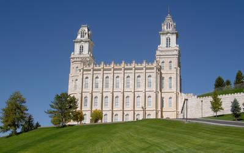
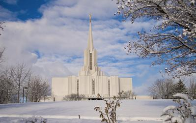
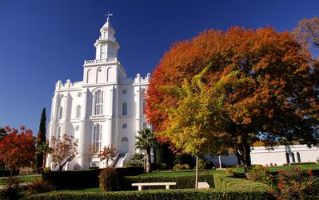
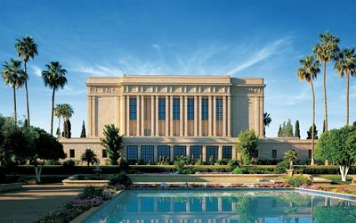

Temple Name: Manti Utah
Location: Manti, Utah, United States
Dedication: 21 May, 1888
Area: 74792
Description: The Manti Temple was one of the first (if not first) temples to be built in Utah. It was reconstructed for the purpose of sustaining its life much more for future generation to come.
Temple Name: Jordan River Utah
Location: South Jordan, Utah, United States
Dedication: 20 November, 1981
Area: 148236
Description: I love this temple because of how much I've been going there recently. My friends and I try to go as often together so that we can share our experiences anc also catch up on what we've been doing.
Temple Name: St. George Utah
Location: St. George, Utah, United States
Dedication: 8 April, 1877
Area: 143969
Description: This temple was recently reconstructed and it is beautiful. During the time when Brigham Young was the prophet, this was one of the places where the leaders of the church would meet and find inspiration from God.
Temple Name: Mesa Arizona
Location: Mesa, Arizona, United States
Dedication: 23 October, 1927
Area: 75000
Description: The Mesa Temples structure reminds of how the temple would look like duriing Jesus' ministering. That's what makes this one of my favorites.
Temple Name: Washington D.C.
Location: Kensington, Maryland, United States
Dedication: 1974, November, 19
Area: 156558

Description: This temple is very unique becuase of its size. This temple is much larger than the Salt Lake Temple, it's one of the few temples that are this large in size in the world. This temple also was where one of my great-grandfathers had his sealing to his wife.
Temple Name: Oqurrih Mountain
Location: South Jordan, Utah, United States
Dedication: 21 August, 2009
Area: 60000

Description: This temple holds many memroies for me, this the first temple I went throught to do baptisms for the dead and later I had my Endowment here. I hope to be sealed in this temple when it's time.